기계정비산업기사 (2015-05-31 기출문제)
1과목: 공유압 및 자동화시스템
1. 그림은 건설기계에서 사용되고 있는 유압모터회로이다. 이 회로의 명칭은?
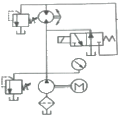
- 정토크 회로
- 직렬 배치 회로
- 탠딩형 배치 회로
- 병렬 배치 회로
(정답률: 76%)

2. 유압 펌프 토출측 관로에 실치하는 필터는?
- 보조 필터
- 압력라인 필터
- 바이패스 필터
- 복귀라인 필터
(정답률: 54%)
3. 그림의 회로와 같이 필터를 설치하였을 때 특징으로 적합한 것은?
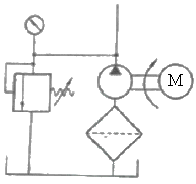
- 유압밸브 보호를 주목적으로 한다.
- 오염으로부터 펌프를 보호할 수 있다.
- 복귀관 필터라고 하며 가격이 비싸다.
- 필터오염 시 캐비테이션이 발생하지 않는다.
(정답률: 72%)
4. 강관 배관시 주의사항으로 옳지 않은 것은?
- 실링 테이프 1~2산 정도 남기고 감는다.
- 액체 실(seal)을 사용할 경우 암나사부에 바른다.
- 나사전용기로 정확하게 나사를 가공하고 내부청소를 깨끗이 한다.
- 기기의 점검과 보수를 위하여 부분적으로 플랜지, 유니언 등을 사용한다.
(정답률: 81%)
5. 유압펌프의 이론 토출량에 대한 실제 토출량의 비는?
- 전효율
- 기계효율
- 용적효율
- 동력효율
(정답률: 62%)
6. 방향 전환 밸브의 포트 수와 위치 수가 그림과 일치하지 않는 것은? (문제오류로 실제 시험에서는 2, 3, 4번이 정답처리 되었습니다. 여기서는 2번을 누르면 정답 처리 됩니다.)
- 2포트 2위치 :

- 2포트 3위치 :

- 2포트 4위치 :

- 3포트 4위치 :

(정답률: 85%)
7. 압축기의 설치 장소에 관한 설명으로 옳지 않은 것은?
- 통풍이 양호한 장소에 설치한다.
- 옥외 설치 시 직사광선을 피한다.
- 쿨링 타워 부근에 설치하여야 한다.
- 건축물과는 벽면에 30cm 이상 떨어져 있어야한다.
(정답률: 78%)
8. 긴 행정거리를 얻을 수 있도록 다단 튜브형의 로드를 갖는 실린더는?
- 충격 실린더
- 양로드형 실린더
- 로드리스 실린더
- 텔레스코프 실린더
(정답률: 81%)
9. 절대습도를 구하는 식은?
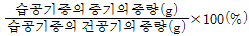
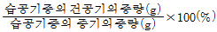
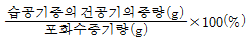
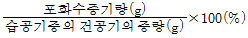
(정답률: 68%)
10. 공압기기에서 비접촉식 감지장치가 아닌 것은?
- 압력 증폭기
- 반향 감지기
- 배압 감지기
- 공기 배리어(barrier)
(정답률: 67%)
11. 직류전동기 회전 시 소음이 발생하는 원인과 가장 거리가 먼 것은?
- 코일 단락
- 축받이의 불량
- 정류자 면의 거침
- 정류자 면의 높이 불균일
(정답률: 80%)
12. 다음 공압 액추에이터 중 회전각도의 범위가 가장 큰 것은?
- 피스톤형
- 크랭크형
- 베인형
- 래크와 피니언형
(정답률: 85%)
13. ROM에 대한 설명 중 틀린 것은?
- 저장된 내용을 변경할 수 없다.
- 저장된 내용을 읽기만 가능하다.
- 한번만 프로그램 입력이 가능하다.
- 사용자 프로그램과 데이터를 저장할 수 있다
(정답률: 66%)
14. 하나의 피스톤 로드에 두 개의 피스톤을 부착하여 실린더 전진운동 시 수압면적이 두배가 될 수 있어 같은 크기의 다른 실린더에 비하여 두 배 크기의 힘을 낼 수 있는 실린더는?
- 램형 실린더
- 탠덤 실린더
- 로드리스 실린더
- 양로드형 실린더
(정답률: 82%)
15. 아래 그림과 같은 전기회로도에 해당하는 논리식은?
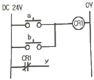
- y = a+b
- y = aㆍb
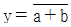
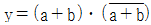
(정답률: 62%)
16. 공압 실린더가 전ㆍ후진 시 낼 수 있는 힘과 관계없는 것은?
- 공기 압력
- 실린더 속도
- 실린더 튜브의 직경
- 피스톤 로드의 직경
(정답률: 60%)
17. 설비의 고장 발생원인 중 미결함에 대한 내용으로 틀린 것은?
- 설비의 고장에 대한 잠재적인 원인이다.
- 만성로스는 미결함의 방치로 인해 발생한다.
- 일반적으로 생각되는 먼지, 마모, 녹, 흠, 변형 등을 말한다.
- 항상 돌발고장 이후에 직접적인 고장 원인이 되는 미결함이 발생한다.
(정답률: 71%)
18. 기계적인 변위를 제어하는 서보(servo) 센서의 종류가 아닌 것은?
- 리졸버
- 타코미터
- 포텐쇼미터
- 파이로 센서
(정답률: 61%)
19. 제어를 행하는 과정에 따라 제어시스템을 분류한 것 중 설명이 틀린 것은?
- 메모리제어 : 출력에 영향을 줄 반대되는 입력신호가 들어 올 때까지 이 전 에 출력된 신호는 유지된다.
- 시퀀스제어 : 이전단계 완료여부를 센서를 이용하여 확인 후 다음 단계의 작업을 수행한다.
- 조합제어 : 요구되는 입력 조건에 관계없이 그에 관련된 모든 신호가 출력 된다.
- 파일릿제어 : 메모리 기능이 없고 이의 해결을 위해 볼(Boolean) 논리 방정식을 이용한다.
(정답률: 75%)
20. 전기에너지와 탄성에너지의 가역 변환에 의해 변형량을 측정하는데 이용되는 센서는?
- 서미스터
- 초음파 센서
- 포텐쇼미터
- 스트레인 게이지
(정답률: 71%)
2과목: 설비진단관리 및 기계정비
21. 프로세서형 설비의 로스는 9대 로스로 구분된다. 그 중 이론사이클 시간과 실제사이클 시간의 차이를 나타내는 것은 어떤 로스를 말하는가?
- 계획정지로스
- Shut down로스
- 순간정지로스
- 속도저하로스
(정답률: 67%)
22. 신호처리를 하는 경우 최소 주파수와 최고 주파수 구간을 설정하여 사용하는 필터는?
- 로패스 필터 (low pass filter)
- 밴드 제거 필터 (band stop fiIter)
- 하이패스 필터 (high pass filter)
- 밴드 패스 필터 (band pass filter)
(정답률: 64%)
23. 신뢰성을 평가하기 위한 기준에 관한 설명으로 옳은 것은?
- 신뢰성이란 일정조건하에서 일정기간 동안 고장없이 기능을 수행할 확률을 나타낸다.
- 고장률이란 신뢰성의 대상물에 대한 전 고장수에 대한 사용시간의 비율을 나타낸다.
- 평균 고장시간(Mean Time To Failures)이란 일정기간 중 발생하는 단위시간당 고장횟수로 나타낸다.
- 평균 고장간격(Mean Time Between Failures)이란 설비 또는 중요부품이 사용되기 시작하여 처음 고장이 발생할 때 까지의 평균시간을 말한다.
(정답률: 62%)
24. 설비보전의 효과가 아닌 것은?
- 보전비 및 제작 불량 감소
- 가동률 향상 및 자본 투자 감소
- 제조원가 절감 및 보험료 증가
- 재고품 및 납기 지연 감소
(정답률: 83%)
25. 보전작업의 낭비를 제거하여 효율성을 증대시키기 위한 것으로 보전작업 측정, 검사 및 일정 계획을 위해서 반드시 필요한 것은?
- 설비효율측정
- 로스(Loss) 관리
- 설비보전표준
- 설비 경제성 평가
(정답률: 77%)
26. 외력이나 외부 토크가 연속적으로 가해짐으로써 생기는 진동은?
- 공진
- 강제진동
- 고유진동
- 자유진동
(정답률: 79%)
27. 미스얼라인먼트(misalignment)의 주요 발생 원인이 아닌 것은?
- 윤활유 불량
- 축심의 어긋남
- 휨 축(bent shaft)
- 베어링 설치불량
(정답률: 74%)
28. 설비관리 조직 설계상 고려 요인이 아닌 것은?
- 공장규모 또는 기업의 크기
- 설비의 특징(구조, 기능, 열화속도)
- 제품의 특성(원료, 반제품, 완제품)
- 설비의 취득부터 폐기까지의 관리
(정답률: 75%)
29. 신뢰성의 대상물이 사용되어 처음 고장이 발생할 때까지의 평균시간은?
- 고장률
- 정미시간
- 평균고장간격
- 평균고장시간
(정답률: 77%)
30. TPM의 특징 및 목표가 아닌 것은?
- output을 지향할 것
- 현장의 체질을 개선할 것
- 맨ㆍ머신ㆍ시스템을 극한 상태까지 높일 것
- 설비가 변하고, 사람이 변하고, 현장이 변하는 것
(정답률: 70%)
31. 설비관리의 조직계획에서 지역이나 제품, 공정 등에 따라 설비를 분류하여 그 관리를 담당하는 방식은?
- 기능 분업
- 지역 분업
- 직접 분업
- 전문기술 분업
(정답률: 83%)
32. 다음 중 일상 보전에서 취급하지 않는 것은?
- 정기점검
- 정기적 갱유
- 정기적 정밀진단
- 정기적 부품 교환
(정답률: 64%)
33. 설비배치 계획자가 설비배치의 기초자료 수집 및 유형을 선택하는 것을 돕기 위해서 쓰이는 방법은?
- ABC 분석
- P-Q 분석
- 일정계획법
- 활동관련 분석
(정답률: 77%)
34. 설비진단기술의 도입효과는?
- 설비의 자동화
- 돌발적 고장 방지
- 현장작업자의 감축
- 오버홀 주기의 단축
(정답률: 73%)
35. 다음 중 소음 방지 기본 방법이 아닌 것은?
- 흡음
- 차음
- 방풍망
- 소음기(silencer)
(정답률: 84%)
36. PM분석의 특징으로 맞는 것은?
- 현상은 포괄적으로 파악한다.
- 원인 추구 방법은 과거의 경험이다.
- 각각의 원인을 나열식으로 하여 요인을 발견한다.
- 원리 및 원칙을 수립하므로 필요한 대책을 수립하기가 용이하다.
(정답률: 69%)
37. 진동 측정 시 주의해야 할 점이 아닌 것은?
- 언제나 같은 센서를 사용한다.
- 진동계를 바꿔가면서 측정한다.
- 항상 동일한 위치에서 측정한다.
- 항상 동일한 방향으로 측정한다.
(정답률: 85%)
38. 윤활유의 첨가제가 갖추어야 할 일반적인 성질과 가장 거리가 먼 것은?
- 증발이 많아야 한다.
- 색상이 깨끗하여야 한다.
- 기유에 용해도가 좋아야 한다.
- 유연성이 있어 다목적이어야 한다.
(정답률: 79%)
39. 보전효과 측정방법에서 항목별 계산공식으로 틀린 것은?
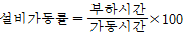
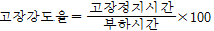
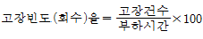
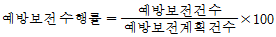
(정답률: 64%)
40. 진동현상의 특징 중 고주파에서 발생하는 이상 현상인 것은?
- 풀링(Iooseness)
- 언밸런스(unbalance)
- 공동현상(cavitation)
- 미스얼라인먼트(misalignment)
(정답률: 63%)
3과목: 공업계측 및 전기전자제어
41. 외력이 없을 때는 닫혀있고 외력이 가해지면 열리는 접점은 어느 것인가?
- a접점
- b접점
- c접점
- d접점
(정답률: 81%)
42. 미분시간 3분, 비례이득 10인 PD 동작의 전달 함수는?
- 10(1+2s)
- 1+3s
- 10(1+3s)
- 5+2s
(정답률: 81%)
43. 다음 압력계의 종류 중에서 탄성식은?
- 침종식
- 벨로스식
- 경사관식
- 압전기식
(정답률: 78%)
44. 다음 중 이상적인 연산증폭기의 특징으로 틀린 것은?
- 전압 이득이 무한대
- 입력 임피던스는 0
- 대역폭이 무한대
- 출력 임피던스는 0
(정답률: 67%)
45. 미리 설정된 조건 순서에 따라 행하여지는 제어방식은 다음 중 어느 것인가?
- 피드백제어
- 프로세서제어
- 시퀀스제어
- 추치제어
(정답률: 81%)
46. 디지털 시스템에서 여러 가지 연산 동작을 위하여 1비트 이상의 2진 정보를 임시로 저장하기 위해 사용하는 기억 장치는?
- 계수기
- 플립플롭
- 부호기
- 레지스터
(정답률: 66%)
47. RLC 직렬 회로에서 공진이 발생하기 위한 조건은? (단, XC는 용량성 리액턴스 XL은 유통성 리액턴스이다.)
- XC ＜ XL
- XC ＞ XL
- XC = XL
- XCㆍ XL = 0
(정답률: 69%)
48. 제어 요소의 동작 중 연속 동작이 아닌 것은?
- 미분동작
- on-off동작
- 비례미분동작
- 비례적분동작
(정답률: 80%)
49. 회로시험기로 전압을 측정하여 230V 를 나타낸다. 참값이 220V 이면 오차는 몇 V인가?
- 20
- 10
- -10
- -20
(정답률: 66%)
50. 반복적으로 읽기와 쓰기 양쪽이 가능한 기억소자는?
- RAM
- ROM
- PROW
- TTL
(정답률: 73%)
51. 일정한 환경 조건하에서 측정량이 일정함에도 불구하고 전기적인 증폭기를 갖는 계측기의 지시가 시간과 함께 계속적으로 느슨하게 변화하는 현상은?
- 드리프트(drift)
- 히스테리시스
- 비직선성
- 과도특성
(정답률: 67%)
52. NOR 회로를 나타내는 논리기호는?
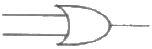
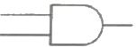
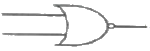
(정답률: 80%)
53. 60Hz 4극 3상 유도 전동기의 회전 자기장 회전 수(rpm)는?
- 3600
- 1800
- 1600
- 1200
(정답률: 70%)
54. 그림과 같이 입력이 A와 B인 회로도에서 출력 Y는?
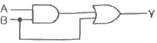
- AㆍB
- (A •B)ㆍB
- (A+B)+B
- (AㆍB)+B
(정답률: 73%)
55. 연상증폭기를 이용한 회로 중 전압 플로원(Voltage Follower)에 관한 설명으로 틀린 것은?
- 높은 입력 임피던스를 갖는다.
- 낮은 출력 임피던스를 갖는다.
- 이득이 1에 가까운 비반전 증폭기이다.
- 입력과 극성이 반대로 되는 출력을 얻을 수 있다.
(정답률: 48%)
56. 연상증폭기에 계단파 입력(step Function)을 인가하었을 때 시간에 따른 출력전압의 최대변화율은?
- 드리프트(drift)
- 옵셋(offset)
- 대역폭(band width)
- 슬루율(slew rate)
(정답률: 68%)
57. 진동기의 과부하 보호장치로 사용되는 계전기는?
- 지락계전기(GR)
- 열동계전기(THR)
- 부족전압 계전기(UVR)
- 래칭 릴레이(LR)
(정답률: 77%)
58. 파형률을 옳게 나타낸 것은?
- 최대값/실효값
- 실효값/최대값
- 평균값/실효값
- 실효값/평균값
(정답률: 47%)
59. 두 종류의 금속을 접속하고 양 단에 온도차를 주면 단자 사이에 발생되는 기전력을 이용한 온도계는?
- 광 온도계
- 열전 온도계
- 방사 온도계
- 액정 온도계
(정답률: 82%)
60. 다음의 그림은 3상 유도전동기의 단자를 표시한 것이다. 이 전동기를 △결선하고자 한다면?
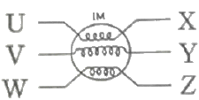
- U-W, Z-Y, V-X를 연결한다.
- U-Y, V-W, X-Z를 연결한다.
- U-Y, V-Z, W-X를 연결한다.
- X, Y, Z를 연결한다.
(정답률: 80%)
4과목: 기계정비 일반
61. 밸브의 완전 개방시 유체저항이 가장 작은 밸브는?
- 앵글 밸브
- 글루브 밸브
- 슬루스 밸브
- 리프트 밸브
(정답률: 67%)
62. 축의 손상이나 파손되는 형태의 여러 가지 요소 증 가장 많이 발생하는 고장 원인은?
- 불가항력
- 자연 열화
- 설계 불량
- 조립, 정비 불량
(정답률: 73%)
63. 주철제 원통 속에 두 축을 맞대어 끼쿼 키로 고정한 축이음은?
- 머프 커플링
- 플랜지 커플링
- 유체 커플링
- 플렉시블 커즐링
(정답률: 59%)
64. 기어 감속기의 분류 중 평행 축형 감속기가 아닌 것은?
- 스퍼기어
- 헬리컬기어
- 더블 헬리컬기어
- 스트레이트 베벨기어
(정답률: 64%)
65. 밸브 시트부의 누설 원인으로 가장 거리가 먼 것은?
- 본체의 변형
- 시트면의 손상
- 시트면의 이물질 부착
- 패킹 누르개의 과대 조임
(정답률: 69%)
66. 펌프의 보수 관리에 있어서 베어링의 과열현상을 일으키는 원인으로 가장 거리가 먼 것은?
- 조립ㆍ설치 불량
- 흡입유량의 부족
- 윤활유 질의 부적합
- 윤활유 및 그리스 양의 부족
(정답률: 52%)
67. 두 축이 평행하지도 않고 만나지도 않는 기어는?
- 윔기어
- 스퍼기어
- 내접기어
- 헬리컬기어
(정답률: 73%)
68. 접착제의 구비조건으로 적합하지 않은 것은?
- 액체성일 것
- 고체표면에 침투하여 모세관 작용을 할 것
- 도포 후 일정시간 경과 후 누설을 방지할 것
- 도포 후 고체화하여 일정한 강도를 유지할 것
(정답률: 61%)
69. 관 이음쇠의 기능이 아닌 것은?
- 관로의 연장
- 관로의 곡절
- 관로의 분기
- 관의 피스톤 운동
(정답률: 78%)
70. 버어니어 캘리퍼스의 종류 중 부척(vemier)이 홈형으로 되어 있으며 외측 측정용 조(jaw), 내측 측정용 조(jaw), 깊이 바(depth bar)가 붙어있는 것은?
- M형
- CB형
- CM형
- MT형
(정답률: 61%)
71. 전동기의 고장현상 중 기동불능의 원인으로 거리가 먼 것은?
- 퓨즈 단락
- 베어링의 손상
- 서머 릴레이 작동
- 노 퓨즈 브레이크 작동
(정답률: 50%)
72. 원심형 통풍기의 정기검사항목에 해당되지 않는 것은?
- 풍속과 흡기온도
- 흡기, 배기의 능력
- 통풍기의 주유상태
- 덕트 접촉부의 풀림
(정답률: 41%)
73. V 벨트 풀리의 홈 각이 V 벨트의 각도에 비해 작은 이유로 옳은 것은?
- 고속회전 시 풀리의 진동 및 소음 방치
- 미끄럼 발생 방지에 의한 동력손실 감소
- V 벨트가 인장력을 받아 늘어났을 때 동력 손실 방지
- 장기간 사용시 마모에 의한 V 벨트와 풀리간 헐거움 방지
(정답률: 51%)
74. 어떤 볼트를 조이기 위해 50k9fㆍcm 정도의 토크가 적당하다고 할 때, 길이 10cm의 스패너를 사용한다면 가해야 하는 힘은 약 얼마 정도가 적정한가?
- 5 kgf
- 10 kgf
- 50 kgf
- 100 kgf
(정답률: 73%)
75. 열 박음에 의해서 베어링을 조립하고자 할 때 적당한 가열온도는?
- 50℃
- 100℃
- 200℃
- 400℃
(정답률: 71%)
76. 기계 조립작업 시 주의사항으로 옳지 않은 것은?
- 볼트와 너트는 균일하게 체결할 것
- 무리한 힘을 가하여 조립하지 말 것
- 정밀기계는 장갑을 착용하고 작업할 것
- 접합면에 이물질이 들어가지 않도록 할 것
(정답률: 83%)
77. 펌프에서 흡입관을 설치할 때 적절한 방법이 아닌 것은?
- 관의 길이는 짧고 곡관의 수는 적게 한다.
- 흡입관에 편류나 와류를 적당히 발생시킨다.
- 흡입관 끝에 스트레이너 또는 루트 밸브를 사용한다.
- 관내 압력은 대기압 이하로 공기 누설이 없는 관이음으로 한다.
(정답률: 69%)
78. 펌프의 사용 재질에 따른 분류 중 대단히 높은 고압용에 사용되는 펌프는?
- 경연 펌프
- 자기제 펌프
- 주강제 펌프
- 경질 염비제 펌프
(정답률: 76%)
79. 파이프를 절단하는데 주로 사용하는 공구는?
- 오스터
- 파이프 커터
- 리이머
- 플러링 툴 셋
(정답률: 73%)
80. 펌프의 수격현상 방지책으로 틀린 것은?
- 서지 탱크를 설치한다.
- 관로의 부하 발생점에 공기 밸브를 설치한다.
- 관로의 지름을 크게 하여 관내 유속을 감소시킨다.
- 플라이휠 장치를 사용하여 회전속도를 급감속시킨다.
(정답률: 56%)